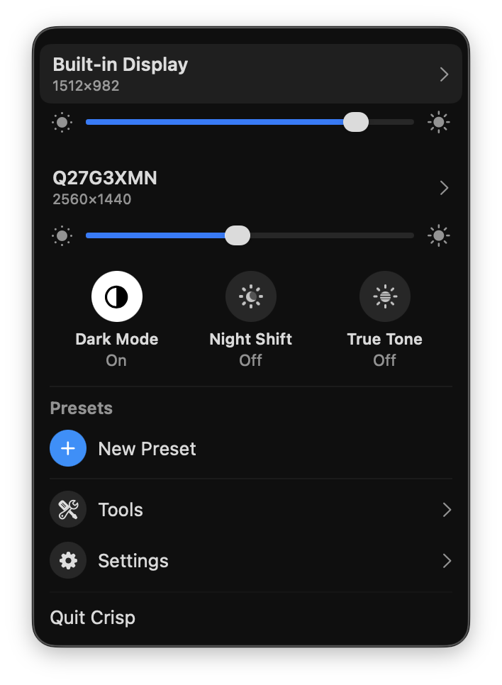

You plug a 1080p or 1440p monitor into your Mac and everything is either microscopic at native resolution or fuzzy the moment you scale it up. It isn't the monitor, and it isn't a bad cable. It's how macOS handles external displays.
What's actually happening
A MacBook's built-in Retina screen has a very high pixel density (around 220 PPI). macOS renders it at 2x and scales down, so the interface is both sharp and comfortably sized. For most external monitors, macOS does not offer that same HiDPI (Retina-style) scaled mode, which leaves you with two bad options:
- Native resolution: perfectly sharp, but the UI is drawn at physical pixel size, so on a 27" 1440p display everything looks tiny and cramped.
- A lower scaled resolution: the UI gets bigger, but you're now driving the panel off its native resolution, so the whole image goes soft.
What you actually want is a "looks like 1920×1080, rendered at 2x" HiDPI mode: big and sharp, exactly like the built-in display. macOS hides that option for external monitors. Paid apps like BetterDisplay and Lunar can unlock it, but they put parts of it behind a Pro tier.
The fix: Crisp (free and open source)
Crisp is a free, open-source (MIT) macOS menu bar app that adds the HiDPI scaled resolutions macOS leaves out. It's designed to feel like an expanded version of the built-in Display menu, so it lives in the menu bar and you never have to dig through System Settings.

How to enable HiDPI on an external monitor
1. Install it. Homebrew is the cleanest path and triggers no security warnings:
$ brew install --cask didriksg/tap/crisp
Prefer a direct download? Grab the DMG from GitHub Releases. It's unsigned, so on first launch right-click Crisp.app and choose Open, or run xattr -dr com.apple.quarantine /Applications/Crisp.app once.
2. Turn on HiDPI. Click the menu bar icon, expand the external display, and enable HiDPI. Displays at 2K and above get their scaled resolutions configured automatically. The first time you enable it for a given monitor, macOS asks for your admin password once (it writes to a protected system folder); every switch after that is password-free.
3. Pick a scaled resolution. On a 27" 1440p monitor, the "looks like 1920×1080" option (rendered at 2x) is usually the sweet spot between sharpness and screen real estate.
What else Crisp does
- Brightness on any monitor: hardware DDC control (with a software/gamma fallback), brightness keys routed to the display under your cursor, and dimming below the hardware floor.
- Presets: save resolution, brightness, and arrangement as a set with custom icons, and apply in one click.
- Arrangement: drag-to-arrange canvas and one-click main display switching.
- Disconnect displays: turn a physical display off and back on from the menu (Apple Silicon, remembered across sleep/wake).
- System toggles: Dark Mode, Night Shift, and True Tone from the menu bar.
- Color: ICC profile switching plus gamma and contrast adjustment.
- More: virtual HiDPI displays, notch hiding, auto brightness that follows your built-in screen, launch at login.
Crisp vs BetterDisplay and Lunar
The feature overlap is large; the difference is the price. Crisp is completely free with no Pro tier and no license key. Features that BetterDisplay and Lunar charge for, disconnecting displays, color adjustments, and auto-brightness that follows your built-in screen, are free in Crisp. It's open source (MIT), so you can read the code or build it yourself.
Requires macOS 15 (Sequoia) or later; on macOS 26 the panel uses the native Liquid Glass backdrop. Localized in English and Simplified Chinese.